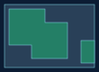

BiomaData — sobreposição de áreas ambientais
Medir cobertura ambiental sem contar áreas sobrepostas mais de uma vez.
MVP espacial · dados sintéticos

Resumo do projeto
Objetivo
Medir cobertura ambiental sem contar áreas sobrepostas mais de uma vez.
Entrega atual
Protótipo independente com mapa SVG, dados GeoJSON e relatório JSON para conferência. Inspirado no BiomaData, sem integração automática na aplicação original.
Técnicas e funcionamento
Interseção, recorte e união de polígonos com Shapely/GEOS.
Dados e treinamento
Dados sintéticos em coordenadas planas locais em metros. Não há treinamento de IA; o processamento usa geometria e algoritmos explícitos.
Resumo sintético
Criei uma análise que cruza áreas ambientais com um limite de estudo, recorta o que está fora e calcula a cobertura sem duplicar sobreposições.
Resultados e limites
No cenário sintético de 7.000 m², a cobertura foi de 3.200 m² (45,71%). O cálculo descontou 375 m² contados em duplicidade. A geometria não comprova desmatamento ou situação legal. Categorias e fontes precisam ser verificadas antes de analisar dados reais.
Próximas etapas
Importar camadas autorizadas, validar projeção e qualidade das geometrias e conectar o resultado ao fluxo de revisão do BiomaData. Ampliar métricas por categoria e período.
Reproduza o experimento
python -m pip install -r requirements.txt
python demo.py
python -m unittest discover -s tests -vAs coordenadas são locais; dados geográficos precisam de projeção adequada antes de medir áreas e distâncias.